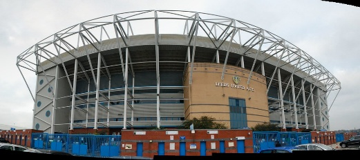

A Leeds United címere. Kattints a képre a nagyobb nézethez.
A Leeds United FC egy angol profi labdarúgóklub az angol első osztályú labdarúgó bajnokságban, a Premier League-ben. Székhelye az angliai Leedsben található, 1919-ben alakult a klub. Hazai mérkőzéseit Leeds legnagyobb stadionjában, a közel negyvenezer férőhelyes Elland Road-on játssza.
Szövetségi kapitánya a német Daniel Farke. A csapat 3-szoros angol bajnok, 1-szeres angol kupa- és Ligakupa-győztes, 2-szeres angol Szuperkupa-győztes. Nemzetközi porondon 1975-ben volt a legeredményesebb, amikor a csapat a Bajnokok Ligája döntőjében, a Bayern München ellen, ezüstérmet szerzett.
A klub adatai
A táblázatban a klubra vonatkozó legfontosabb adatok olvashatók.
Teljes név
Leeds United Football Club
Alapítva
1919. október 17.
Stadion és befogadóképesség
Elland Road, 37645 fő

Elland Road.
A Leeds United létrejötte, legsikeresebb időszaka
A kezdetek
1904-ben Leeds City FC néven alapítottak futballklubot, amelyet 1919-ben felszámoltak azzal a váddal, hogy illegális kifizetéseket eszközöltek a játékosok irányába az első világháború alatt. Az átformálódó és újraalakuló gárda a Leeds United nevet kapta, így hivatalosan 1919-ben jött létre a klub.
A Huddersfield Town akkori elnöke támogatta a klubot, valamint a két klub egyesítését is, ennek mintájára kapta a Leeds is a kék-fehér mezszínt. Később a Real Madrid hatására tiszta fehérre váltottak. A sárga és kék színek az idegenbeli szerelésben maradtak meg, ma viszont már mindhárom szín megtalálható a csapat mezén.
A „nyerő széria”
1961-ben a Leeds United vezetőedzője Donald „Don” Revie lett. Az új tréner első éve igen nehéz körülmények közt zajlott, kis híján ki is estek az időközben átszerveződött ligarendszer harmadik osztályába. A zseniális szakember hamar megfordította a rossz szériát, feljuttatta csapatát az élvonalba, ahol 1965 és 1974 közt nem végeztek a negyediknél rosszabb pozícióban.
1968/69-ben első bajnoki aranyérmüket ünnepelhették, melyet 1973/74-ben újabb siker követett. Más sorozatokban is jól szerepeltek: 1968-ban Ligakupát, 1972-ben FA-kupát nyertek, 1968-ban és 1971-ben pedig elhódították a Vásárvárosok kupáját. Kétségkívül Don Revie a korszak legjobb angol csapatát építette fel.
A Leeds a 2025-26-os szezon óta játszik újra a Premier League-ben, 2 évnyi másodosztályban eltöltött idő után. A klub felnőttcsapatának kerete 26 játékosból áll, ebből 20 légiós és 11 valamelyik ország válogatottjának a tagja.
Posztokat tekintve 4 kapus, 8 hátvéd, 8 középpályás és 7 csatár játszik a csapatban. A Transfermarkt nevű, futballtranzakciókkal foglalkozó weboldal adatai alapján ennek a keretnek a piaci értéke összesen kereken 321 millió euró. A csapatkapitány a walesi válogatott Ethan Ampadu, az első számú kapus a brazil Lucas Perri, az idei szezonban legtöbb góllal rendelkező játékos pedig az angol középcsatár, Dominic Calvert-Lewin.
{kind=link}